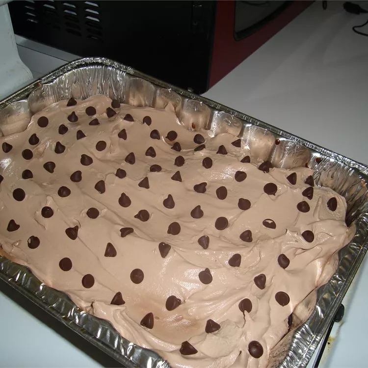

cake

Description
This recipe is made with German chocolate cake mix, hot fudge dessert topping, and chocolate-covered English toffee. It's crazy good!
ingredients
- 1 (15.25 ounce) package German chocolate cake mix
- 1 ¼ cups water
- ½ cup vegetable oil
- 3 large eggs
- 1 (14 ounce) can sweetened condensed milk
- 2 cups hot fudge topping
- 1 (12 ounce) container frozen whipped topping, thawed
- 4 (1.4 ounce) bars English toffee-flavored candy, crushed
Steps
- Preheat the oven to 350 degrees F (175 degrees C). Grease a 9x13-inch glass baking dish.
- Mix cake mix, water, oil, and eggs in a large bowl with an electric mixer on medium speed until well combined. Pour batter into the prepared baking dish.
- Bake in the preheated oven until a toothpick inserted in the center comes out clean, 30 to 35 minutes. Remove from the oven and set the baking dish on a wire rack.
- While the cake is still very warm, poke holes all over the top with the end of a wooden spoon. Pour condensed milk over cake and let cool, 20 to 30 minutes.
- Pour hot fudge topping over cooled cake and let set, 20 to 30 minutes.
- Spread whipped topping over top and sprinkle with crushed toffee.